1 Sebelum Mulai — Cek Syaratnya
Nggak perlu PC mahal. Yang penting OS-nya masih didukung dan ada ruang disk.
Selama PC-nya nggak terlalu tua — misal i3-2100 — dan masih bisa jalanin Windows 10, Hermes harusnya bisa dipasang dan dipakai.
https://hermes-agent.nousresearch.com atau GitHub resmi https://github.com/NousResearch/hermes-agent.
Di luar itu bukan tempat resmi — berisiko kena malware.
2 Langkah demi Langkah
Total 15 langkah, dari nol sampai bisa ngobrol sama Hermes. Screenshot diambil langsung dari proses install yang sebenarnya.
1 Buka situs resmi Nous Research
Hermes Agent dikembangkan oleh Nous Research. Buka situs resminya di https://hermes-agent.nousresearch.com/ — dari sini kamu bakal ambil perintah install-nya. Ingat: hanya situs ini atau GitHub resmi github.com/NousResearch/hermes-agent. Di luar itu bukan tempat resmi dan berisiko malware.
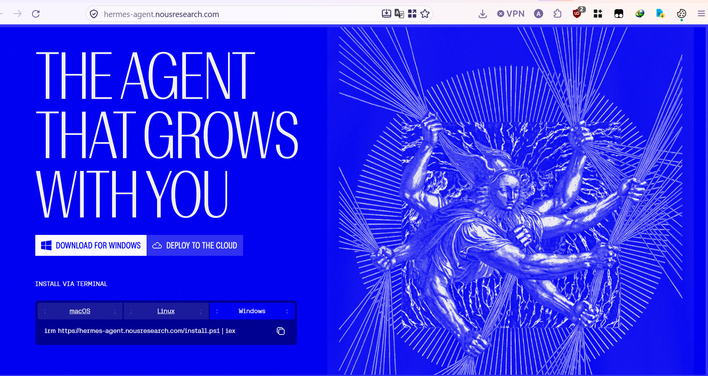
2 Buka PowerShell
Buka CMD dulu, lalu ketik powershell dan tekan Enter — atau lebih simpel: klik Start Menu, ketik powershell, lalu klik Windows PowerShell. Install Hermes CLI wajib lewat PowerShell, bukan CMD.
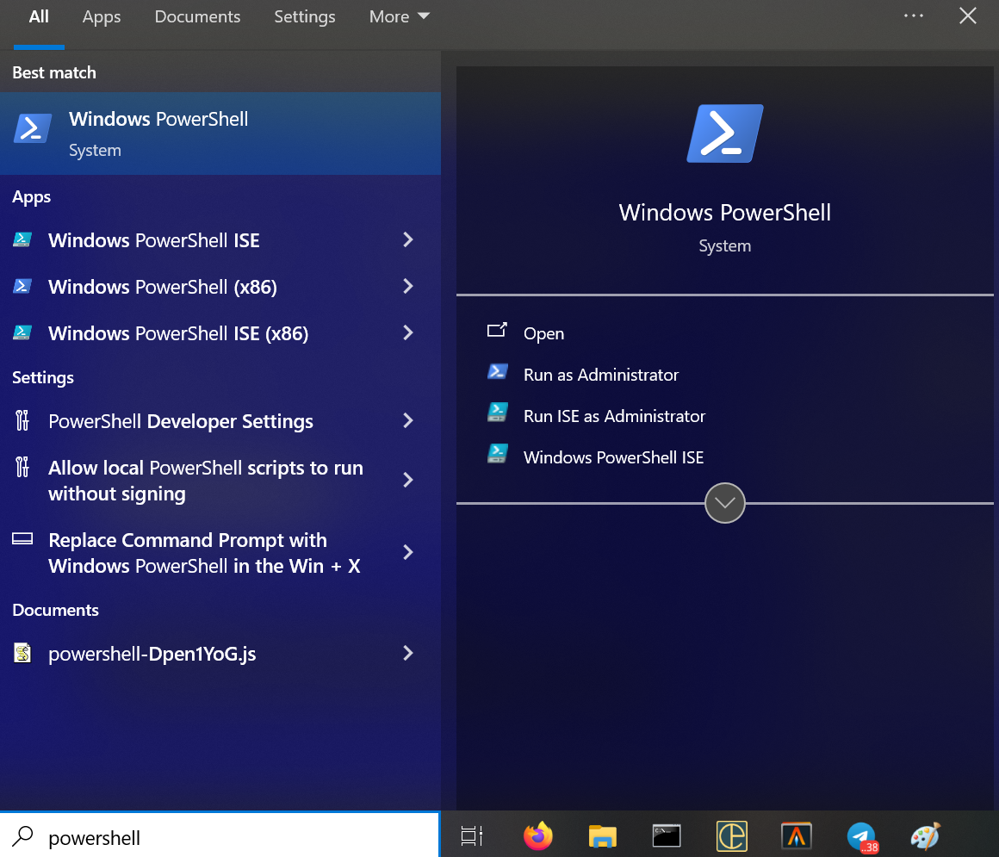
3 Copy perintah irm dari situs
Balik ke situs Nous Research, lalu copy perintah irm buat install Hermes. Perintahnya satu baris aja: iex (irm https://hermes-agent.nousresearch.com/install.ps1)
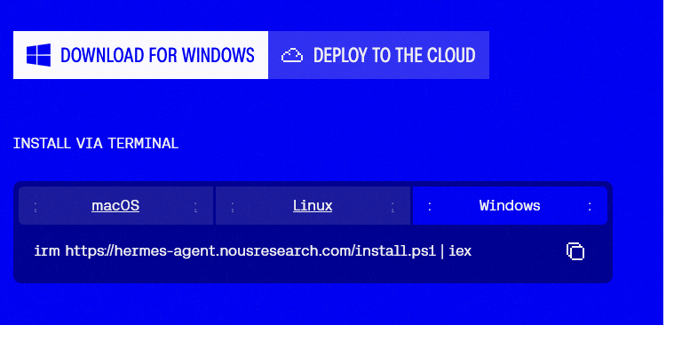
irm dari situs" loading="lazy">4 Kalau muncul peringatan clickfix
Kalau kamu pakai adblock, kadang tombol copy-nya ke-blokir dan muncul peringatan soal clickfix attack. Nggak apa-apa — klik copy sekali lagi, atau blok manual perintahnya.
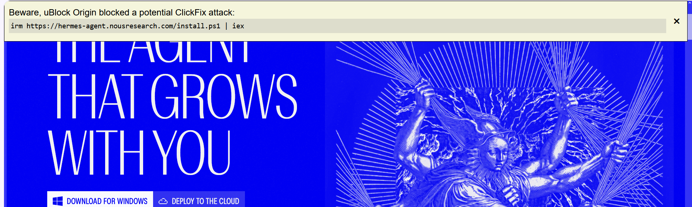
5 Paste di terminal, tekan Enter
Di jendela PowerShell, klik kanan buat paste perintah tadi, lalu tekan Enter. Proses install akan langsung mulai.
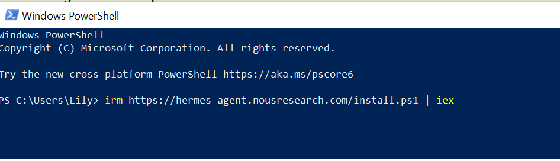
6 Proses install jalan
Pertama, installer akan mengunduh script install resmi Hermes, lalu mulai memasang dependensi dan komponen Hermes. Tunggu aja sampai selesai — jangan tutup jendelanya.
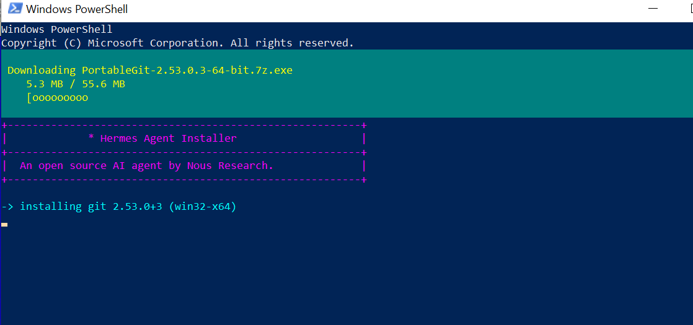
7 Sabar — di IndiHome bisa lambat
Proses ini bisa makan waktu lumayan lama, terutama di jaringan IndiHome, karena download dari GitHub di-throttle. Kalau berasa stuck, nyalain VPN atau Cloudflare WARP (1.1.1.1) — biasanya langsung ngebut lagi.
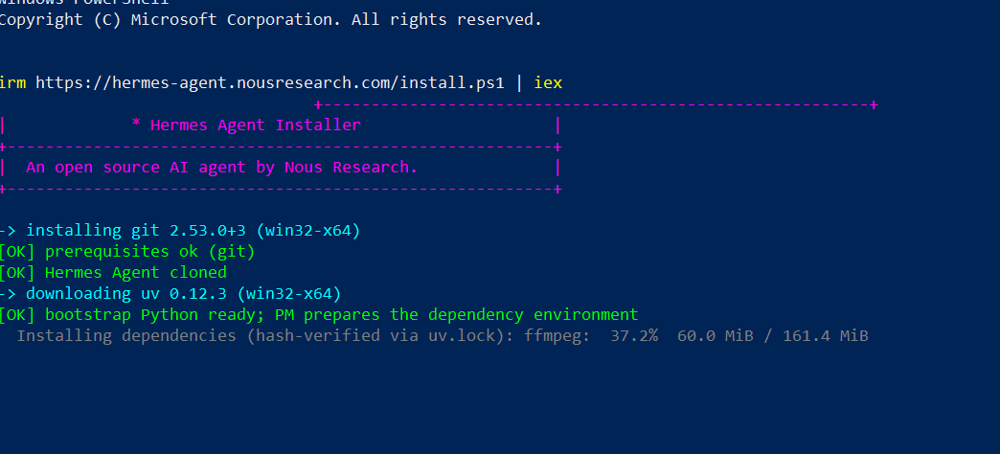
8 Pilih opsi konfigurasi
Setelah install sukses, kamu dikasih opsi buat mengonfigurasi Hermes: pasang API key sendiri, atau pakai Nous Portal buat akses model AI gratis secara instan. Buat sekarang pilih 1, lalu Enter.
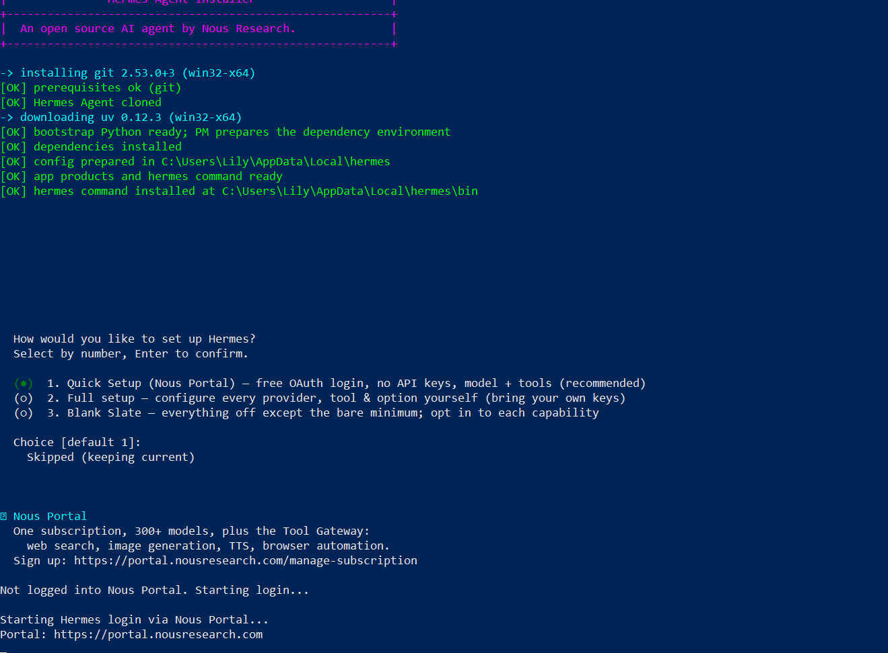
9 Browser terbuka ke portal Nous
Browser default kamu akan otomatis membuka halaman portal Nous. Di situ ada proses verifikasi, pemilihan paket tier, dan login.
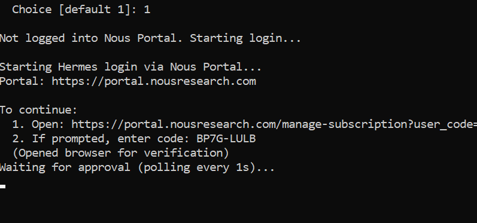
10 Pilih paket Free, lalu Sign in
Pilih paket Free — cukup buat nyoba dan pakai sehari-hari — lalu klik Sign in.
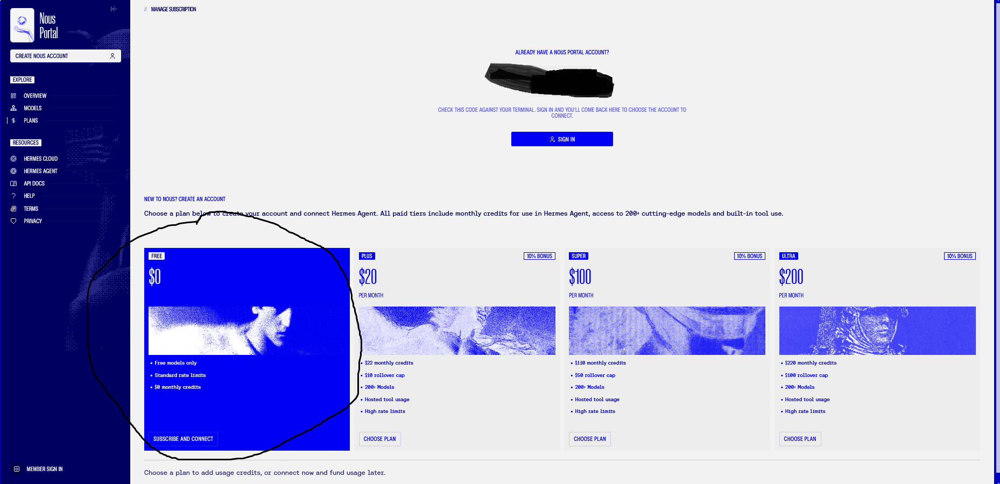
11 Pilih metode login
Pilih cara login kamu: GitHub, Outlook, atau Gmail — kurang lebih sama saja. Kamu bakal diminta mengizinkan portal melihat informasi umum dan publik akun kamu, buat keperluan install. Kalau login pakai ChatGPT, kamu akan diminta menghubungkan akun ChatGPT-mu ke Nous Hermes.
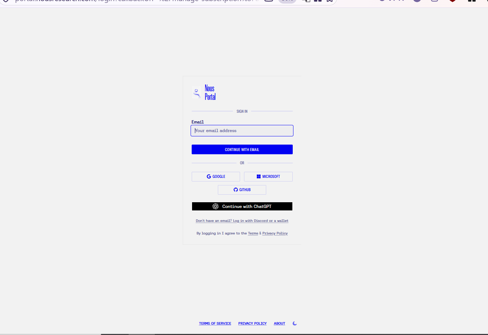
12 Klik Connect
Setelah login berhasil, kamu diminta mengonfirmasi sekali lagi supaya akunmu terhubung ke Hermes Portal. Klik Connect.
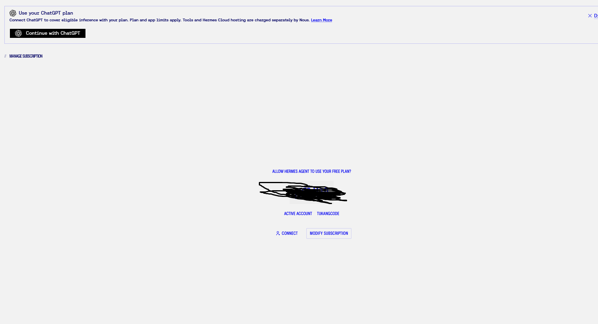
13 Sukses terhubung
Kalau tampilannya seperti ini, berarti akunmu sudah terhubung dan Hermes sudah punya akses model. Balik lagi ke jendela PowerShell.
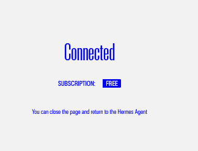
14 Set reasoning level
Di terminal, secara bawaan model AI akan dipasang otomatis — pakai model yang tersedia saat itu. Kamu juga ditanya soal reasoning level. Tekan 3 lalu Enter buat pakai setting bawaan (medium). Detail model & provider kita atur di tutorial terpisah.
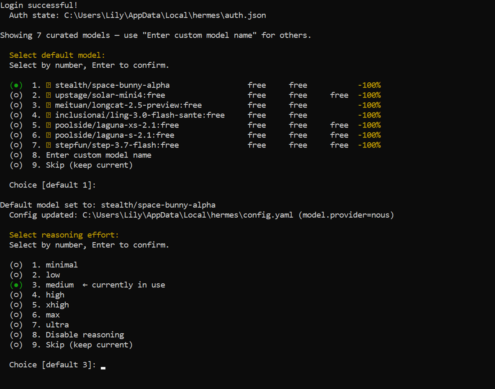
15 Jalankan Hermes
Konfigurasi selesai. Sekarang ketik hermes di terminal buat mulai mode Hermes Agent CLI. Selamat — kamu berhasil install dan mengonfigurasi dasar Hermes!
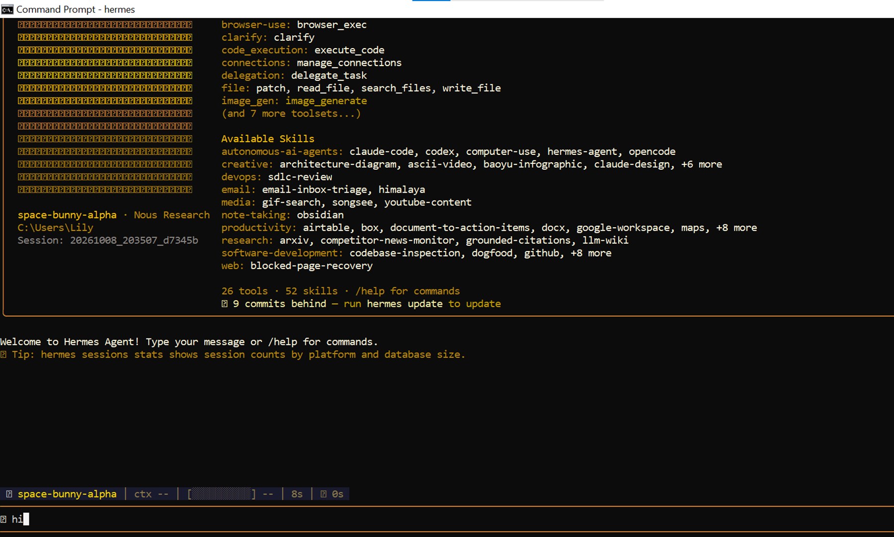
✓ Selesai — Waktunya Pakai
Hermes sudah terpasang dan terhubung. Tinggal jalankan:
hermes
Perintah itu buka mode chat Hermes di terminal. Keluar kapan saja dengan Ctrl + C atau perintah /exit.
Lanjut ke mana?
! Kalau Macet
Tombol copy nggak jalan / ada peringatan clickfix
Kalau kamu pakai adblock, kadang tombol copy di situs ke-blokir dan muncul peringatan soal clickfix attack. Aman — tinggal klik copy sekali lagi, atau blok manual perintahnya.
Download terasa lambat / stuck di GitHub
Ini biasa terjadi di jaringan IndiHome/Telkom, karena download dari GitHub di-throttle. Nyalain VPN atau Cloudflare WARP (1.1.1.1) — biasanya langsung ngebut lagi.
Perintah hermes nggak dikenali
Hermes ditaruh di C:\Users\NAMAKAMU\AppData\Local\hermes\bin dan baru kebaca di window baru.
Tutup PowerShell, buka lagi yang baru, lalu coba hermes --help.
Masih gagal? Panggil langsung: & "$env:LOCALAPPDATA\hermes\bin\hermes.exe"
Panduan ini bantu? Support riset biar bisa bikin tutorial lanjutan.
☕ Trakteer di Trakteer.id